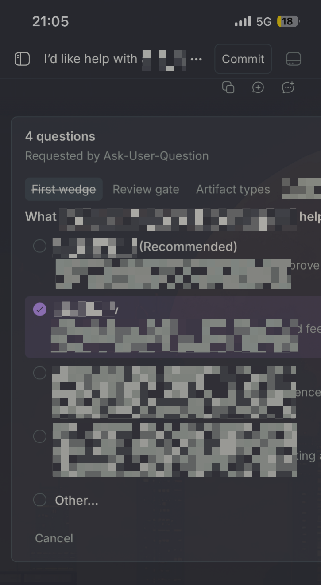
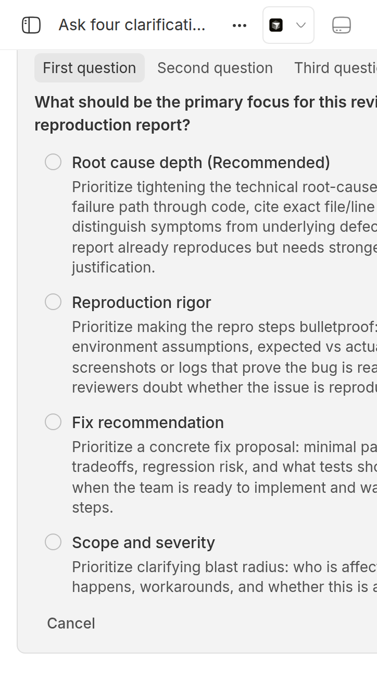
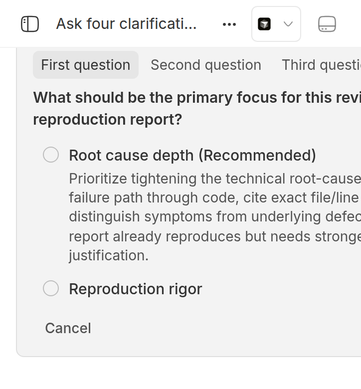
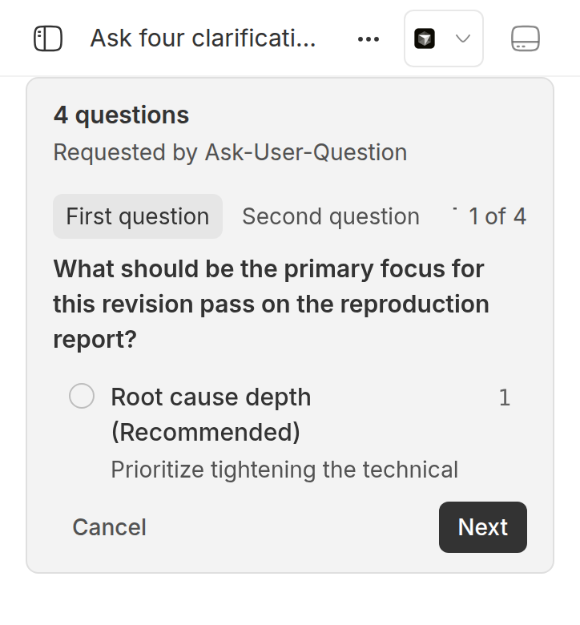

#2537 · Ask-User-Question needs some love on mobile
Verdict: REPRODUCED · Root-cause confidence: high
1. TL;DR
The Ask User Question plugin exceeds a narrow phone viewport and clips its right side. A short viewport also clips the form heading above the visible scroll area.
At 362 by 390 CSS pixels, the card ended at 547.83 pixels. The heading started at -9.25 pixels.
The plugin uses a fixed viewport formula that the native question form removed in pull request 1672. Two host wrappers also keep intrinsic minimum widths.
The source patch kept the card within 346 pixels. It moved the heading below the 48-pixel app header.
2. Claims vs findings
| Claim from the issue | Status | Evidence |
|---|---|---|
| A small phone screen makes four long questions hard to read. | Verified | The fixed four-question payload made the card end at 547.83 pixels. The Next button ended at 530.83 pixels. |
| The software keyboard leaves too little visible space. | Partially verified | A reduced Chrome viewport put the heading at -9.25 pixels. I did not use a real software keyboard. |
| Landscape rotation and Brave on an iPhone show the same result. | Unverified | I did not use a real iPhone or Brave. Chrome mobile emulation reproduced the same geometry. |
| An agent makes the flow difficult to trigger. | Refuted | One exact Cursor prompt created four long questions twice. Both calls reached the same plugin renderer. |
| The problem exists in bb 0.40.0. | Verified | The base package reports version 0.40.0. Current origin/main has no change in the affected files. |
3. Environment
- bb commit:
ad79bbb5ec909524f8f281e62d860c588a86f332, package version 0.40.0. - Host: Ubuntu Linux 7.0.0-29-generic, x86_64.
- Node 24.18.0, pnpm 9.15.0, Cursor agent 2026.08.11-e8db854.
- Browser: Chrome 149.0.7827.55 with mobile and touch emulation.
- Viewport: 362 by 658 pixels. Keyboard simulation used 362 by 390 pixels.
- App
:14456, server:22456, host daemon:30456. - Data directory:
~/.bb-dev/tmp-bb-report-2537-revise-xotunu-9ffa6600b8b9. - The reporter used Brave on an iPhone with Pi 0.84.2. Local Pi reports 0.84.3.
4. Minimal reproduction
-
Start an isolated development app. Wait for the app and server before any browser command.
scripts/bb-dev-app current eval "$(scripts/bb-dev-app env)" app_url=$(scripts/bb-dev-app status | awk '/^App:/ {print $2}') until curl -fsS "$app_url/" >/dev/null && curl -fsS "$BB_SERVER_URL/health" >/dev/null; do sleep 1 done pnpm bb:dev plugin enable ask-user-question -
Create a scratch repository and project. Use the connected host identifier from
machine list.scratch=$(mktemp -d /tmp/bb-2537-repro-XXXXXX) git init "$scratch" host_id=$(node packages/scripts/dist/commands/run-cli.js machine list --json | jq -r '.[0].id') project_json=$(curl -sS -X POST "$BB_SERVER_URL/api/v1/projects" \ -H 'content-type: application/json' \ -d "{\"name\":\"qa-2537\",\"source\":{\"type\":\"local_path\",\"path\":\"$scratch\",\"hostId\":\"$host_id\"}}") project_id=$(printf '%s' "$project_json" | jq -r .id) -
Create a Cursor thread with this exact prompt. Save its identifier.
thread_json=$(node packages/scripts/dist/commands/run-cli.js thread spawn \ --project "$project_id" \ --provider acp-cursor \ --permission-mode full \ --prompt 'Call the AskUserQuestion tool now. Ask exactly four questions in one tool call. Each question must have four options with long descriptions. Do not use any other tool. Do not answer the questions.' \ --json) thread_id=$(printf '%s' "$thread_json" | jq -r .id) node packages/scripts/dist/commands/run-cli.js thread interactions list "$thread_id" --json
Wait until the last command shows one pending plugin interaction. -
Set fixed tab labels. This step removes provider text as a reproduction variable.
data_dir=$(scripts/bb-dev-app status | awk -F': ' '/^Data dir:/ {print $2}') interaction_id=$(node packages/scripts/dist/commands/run-cli.js \ thread interactions list "$thread_id" --json | jq -r '.[0].id') sqlite3 "$data_dir/bb.db" "UPDATE pending_interactions SET payload=json_set(\ payload,'$.data.questions[0].shortLabel','First question',\ '$.data.questions[1].shortLabel','Second question',\ '$.data.questions[2].shortLabel','Third question',\ '$.data.questions[3].shortLabel','Fourth question') WHERE id='$interaction_id';" -
Set
threadUrlin the saved test. Run the exact browser command.doobie -b issue2537-revise --headless --timeout 60 run \ /tmp/bb-reports/issues/2537/repro/measure-mobile-overflow.js
Saved test: measure-mobile-overflow.js.
Expected
banner.left >= 0 banner.right <= viewport.width heading.top >= 48 Next.right <= viewport.width Next.bottom <= viewport.height
Actual
{
"viewport": {
"width": 362,
"height": 390
},
"banner": {
"left": 16,
"right": 547.828125,
"width": 531.828125
},
"heading": {
"top": -9.25,
"bottom": 12.75
},
"next": {
"left": 475.5,
"right": 530.828125,
"top": 312.75,
"bottom": 344.75
}
}
Error: LAYOUT ASSERTIONS FAILED:
banner.right 547.828125 exceeds viewport.width 362
heading.top -9.25 is less than app header bottom 48
next.right 530.828125 exceeds viewport.width 362
at measure-mobile-overflow.js:78:18
[page issue-2537-repro] http://localhost:14456/projects/proj_rftsbtzc27/threads/thr_bb6wm784dy "Ask four clarification questions"
[page:issue-2537-repro] warn: [DEPRECATED] loadable is deprecated and will be removed in v3. Please use a userland util with the `unwrap` util: https://github.com/pmndrs/jotai/pull/3217
The command returned status 1. The block above is the raw browser output without added labels.




Saved test source
// Run with: doobie -b issue2537-revise --headless --timeout 60 run measure-mobile-overflow.js
// Set this URL to the thread that contains the pending form.
const threadUrl =
"http://localhost:14456/projects/proj_rftsbtzc27/threads/thr_bb6wm784dy";
const page = await browser.getPage("issue-2537-repro");
await page.setViewport({
width: 362,
height: 390,
deviceScaleFactor: 2,
isMobile: true,
hasTouch: true,
});
await page.goto(threadUrl, {
waitUntil: "domcontentloaded",
timeout: 30_000,
});
await page.waitForSelector("text/4 questions", {
visible: true,
timeout: 30_000,
});
const result = await page.evaluate(() => {
const banner = document.querySelector('[data-testid="plugin-request-banner"]');
const heading = [...document.querySelectorAll("h3")].find(
(element) => element.textContent?.trim() === "4 questions",
);
const next = [...document.querySelectorAll("button")].find(
(element) => element.textContent?.trim() === "Next",
);
if (!banner || !heading || !next) {
throw new Error("The pending question form is not present.");
}
const bannerRect = banner.getBoundingClientRect();
const headingRect = heading.getBoundingClientRect();
const nextRect = next.getBoundingClientRect();
return {
viewport: { width: innerWidth, height: innerHeight },
banner: {
left: bannerRect.left,
right: bannerRect.right,
width: bannerRect.width,
},
heading: { top: headingRect.top, bottom: headingRect.bottom },
next: {
left: nextRect.left,
right: nextRect.right,
top: nextRect.top,
bottom: nextRect.bottom,
},
};
});
console.log(JSON.stringify(result, null, 2));
const failures = [];
if (result.banner.left < 0) {
failures.push(`banner.left ${result.banner.left} is less than 0`);
}
if (result.banner.right > result.viewport.width) {
failures.push(
`banner.right ${result.banner.right} exceeds viewport.width ${result.viewport.width}`,
);
}
if (result.heading.top < 48) {
failures.push(`heading.top ${result.heading.top} is less than app header bottom 48`);
}
if (result.next.right > result.viewport.width) {
failures.push(
`next.right ${result.next.right} exceeds viewport.width ${result.viewport.width}`,
);
}
if (result.next.bottom > result.viewport.height) {
failures.push(
`next.bottom ${result.next.bottom} exceeds viewport.height ${result.viewport.height}`,
);
}
if (failures.length > 0) {
throw new Error(`LAYOUT ASSERTIONS FAILED:\n${failures.join("\n")}`);
}
({ status: "ALL LAYOUT ASSERTIONS PASSED", result });
5. Root cause
A fixed height repeats a known mobile defect
The plugin form sets max-height: calc(100dvh - 6rem). This formula ignores the app header, safe area, sibling footer content, and keyboard.
<div className="flex max-h-[calc(100dvh-6rem)] min-h-0 flex-col ..."> ... <div className="min-h-0 ... overflow-y-auto ..."> ... <div className="mt-3 flex shrink-0 ...">
Source: plugin form height and scroll layout.
The native form already measures the sticky footer. It applies the available height from the actual scroll port.
Sources: native form height and height measurement hook.
Pull request 1672 removed the same fixed formula from the native form. The plugin copy kept the old formula from pull request 858.
Host wrappers keep intrinsic minimum widths
The composer uses a 330-pixel grid track. Its plugin request child keeps min-width: auto and grows to 531.83 pixels.
Source: plugin request wrapper.
The host also wraps the slot in a fieldset. Chrome gives that fieldset min-width: min-content.
Source: plugin card and host fieldset.
| Element | Measured width | Computed minimum |
|---|---|---|
| Composer grid | 330 px | 0px |
| Plugin request child | 531.83 px | auto |
| Host fieldset | 497.83 px | min-content |
The plugin tab row supports horizontal scroll. The host widths prevent that row from receiving the smaller width.
Source: question tab row.
Why the visible failure follows
The sticky footer becomes taller than the 342-pixel scroll port. Its top moves behind the 48-pixel app header.
The intrinsic child also exceeds the grid track. The thread scroll area hides horizontal overflow, so the right side cannot become visible.
6. Proposed fix (first principles)
- Make the host own the available-height policy for every plugin interaction. Use the existing scroll-port measurement and its
ResizeObserver. - Apply the measured maximum height to a flexible plugin card section. Give that section
min-h-0 min-w-0. - Add
min-w-0to the plugin request grid child. - Set the host fieldset to
display: contents. It can still propagate the disabled state without a layout box. - Keep the plugin's tab strip and action row fixed. Let only the question body scroll.
- Add a 362 by 390 browser test. Check the card, heading, tab row, and action row boundaries.
Do not add only overflow: hidden. That change hides the action buttons but does not remove the fieldset minimum.
The saved proposed fix patch implements this host-owned design.
The 362-by-390 browser test passed after the patch. The app type check and four existing composer tests also passed.
This fix changes only app layout. It does not change the host-daemon protocol.
7. Related issues
- Pull request 1672 fixed the same height defect for native provider questions.
- Pull request 858 added the cross-provider plugin with the old fixed height.
- Pull request 2325 unified provider plugin interactions. It did not change these layout rules.
8. Appendix
Artifacts
- Saved browser reproduction
- Raw geometry measurements
- Saved failing output
- 362-by-390 browser layout test
- Superseded jsdom test note
- Failing browser layout test output
- Validated proposed fix patch
- Passing proposed-fix browser output
- Additional before-and-after geometry
Source patch proof
I applied the saved source patch. The card then ended at 346 pixels.
The heading moved to 61 pixels. The Next button ended at 329 pixels and 345 pixels vertically.
Commands run
pnpm install --frozen-lockfile --prefer-offline pnpm exec turbo run build gh issue view 2537 --comments scripts/bb-dev-app current pnpm bb:dev plugin enable ask-user-question node packages/scripts/dist/commands/run-cli.js thread spawn ... node packages/scripts/dist/commands/run-cli.js thread interactions list ... --json sqlite3 "$data_dir/bb.db" "UPDATE pending_interactions SET payload=json_set(...) ..." doobie -b issue2537-revise --headless --timeout 60 run measure-mobile-overflow.js git fetch origin main git diff ad79bbb5ec90..origin/main -- <affected paths>
Verification
- The verifier reproduced both visible defects after one cold-browser retry.
- I added an app readiness check, a 30-second selector wait, and a 60-second browser limit.
- The revised tests fail each bad bound separately. They also check the Next button right and bottom edges.
- The base browser test failed on
banner.right,heading.top, andnext.right. - The same browser test passed after the source patch. The app type check and four composer tests passed.
- The keyboard claim now has a partial status because this check used Chrome viewport emulation.
- Current
origin/mainhas no change in the four affected source files.